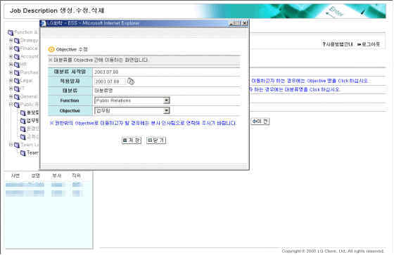

|
개요 | |
 |
개요 | |
| 기존의 대분류나 생성한 대분류의 Objective를 변경(이동) 할 수 있도록 구성된 화면임. | ||
 |
화면사용법 및 유의사항 | |
| <그림 1. Objectives 수정화면> | ||
|  | ||
| 1. 대분류 시작일에 최초 시작일이 Display 된다. 적용일자는 Default로 현재일자가 Display되며 Calendar | ||
| 검색으로 원하는 날짜를 지정할 수 있다. | ||
| 2. 대분류의 Objective를 변경(이동)하기 위하여는 먼저 Function을 선택한다. | ||
| 3. 이때 조회권한이 있는 Function이 Display되면 Function List를 Click하여 선택한다. | ||
| 4. Function을 선택하면 해당하는 Objectives 중 조회권한이 있는 Objectives만 나타나면, Objectives List를 | ||
| Click하여 선택한다. | ||
| 5. 권한 밖의 Objective로 이동하고자 할 경우에는 인사팀 으로 연락한다. | ||
| 6. 화면 하단의 저장 Button을 Click하면 데이터가 저장되고, 닫기 Button을 Click 하면 Pop-Up 창을 닫는다. | ||